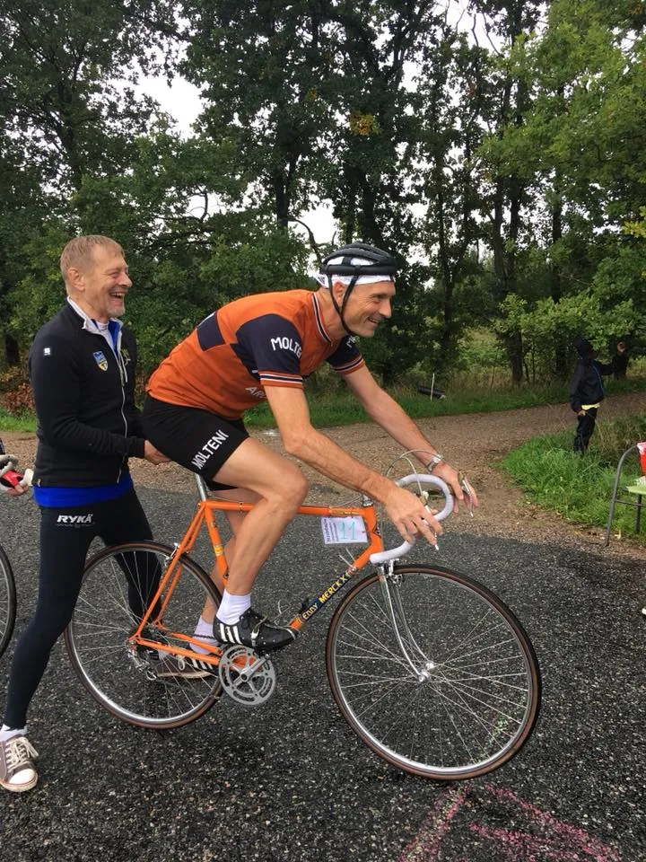

Sejr ved Bindeballe Cronometro Individuale

Toplaceringer til Kaptajn Bjørnsteen og Carsten Jakobsen ved enkeltstarten Bindeballe Cronometro Individuale.
Støvregnen og blygrå skyer hang tungt over Bindeballe og omegn. Men ikke desto mindre var 22 ryttere troppet op, for at prøve kræfter med den krævende 2 x 10 km rute med hårde bakker omkring Bindeballe og Randbøldal.
Arrangørerne bag Bindeballe Cronometro Individuale havde valgt, at enkeltstartsløbet skulle køres i 3 klasser:
1. Den klassiske cykel fra før 1989 dvs. ingen gearskiftere i grebene, klikpedaler og højprofil fælge.
2. Den klassiske enkeltstartscykel fra før 1996 dvs. rammer specielt fremstillet til disiplinen, pladehjul og bøjler.
3. Den moderne cykel.
Squadra Molteni stillede til start med Carsten Jakobsen og Niels Bjørnsteen – naturligvis i klasse 1, Den klassiske cykel.


Carsten var opsat og kørte en topplacering hjem i tiden 40:03. Bjørnsteen gav den alt hvad stålet kunne holde, og kørte en sejr hjem i tiden 36:00.
– Efter en uge i Rostock, med intensiv træning og optimering af aerodynamisk kørestilling, kunne jeg mærke, at jeg var klar, fortæller Carsten, der endda havde afmonteret flaskeholderen, for at vinde 5-8 sekunder.
Allerede under løbet kom solen frem – og efter løbet og præmieoverrækkelse, blev der evalueret i gårdhaven på Bindaballe Købmandsgård.
Bindeballe Cronometro Individuale, danmarks billigste retro-vintage cykelløb, er allerede en klassiker.